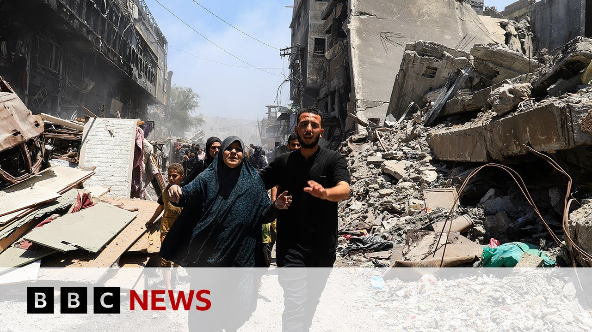

【哈马斯承诺释放10名人质，但要求永久停火以回应美国计划 | BBC新闻】
Summary: Hamas responds to a US proposal by offering to release 10 living Israeli hostages and 18 dead ones in exchange for Palestinian prisoners, while demanding a permanent ceasefire, full Israeli withdrawal from Gaza, and unrestricted aid flow—terms not included in the US plan.
摘要： 哈马斯回应美国提案，提议释放10名活着的以色列人质和18具遗体以交换巴勒斯坦囚犯，同时要求永久停火、以色列完全撤出加沙及援助物资无限制流通——这些条件未包含在美国提案中。

⏱️ Estimated Reading Time: 5 min
Hello there, I'm Rich Preston.
大家好，我是Rich Preston。
Welcome to the program.
欢迎收看本期节目。
Good to have you with us.
很高兴您能加入我们。
And we come on air with developments in the Middle East as attempts to secure a ceasefire in Gaza continue.
我们为您带来中东的最新动态，加沙停火谈判仍在继续。
Hamas has issued a response to a proposal presented earlier in the week by President Trump's envoy Steve Wickoff.
哈马斯对特朗普总统特使Steve Wickoff本周早些时候提出的提案作出了回应。
The group, which is designated a terror organization by a number of countries, including the UK and US, says it's prepared to release 10 living Israeli hostages and the bodies of 18 dead hostages.
该组织被包括英美在内的多国列为恐怖组织，表示准备释放10名活着的以色列人质和18具人质遗体。
That would be in exchange for the release of Palestinians held in Israeli prisons.
这将用以交换被关押在以色列监狱的巴勒斯坦人。
Well, let's go straight to our correspondent Barbara PL Usher who's in Jerusalem.
现在让我们连线在耶路撒冷的记者Barbara PL Usher。
Barbara, what more can you tell us about what Hamas has said?
Barbara，关于哈马斯的声明，您能提供更多信息吗？
Well, that statement that it's prepared to release 10 living hostages and 18 dead ones, that's in line with the proposal that Steve Witoff uh offered.
哈马斯表示准备释放10名活着的和18名已故人质，这与Steve Witoff提出的提案一致。
That was those were the numbers um in the terms.
这些数字是提案中的条款。
Uh but but Hamas also issued a very detailed response to other parts of the proposal with which it disagreed.
但哈马斯还对提案中不同意的其他部分作出了详细回应。
Um basically laying out its long-standing demands for a permanent ceasefire that is an end to the war.
基本上重申了其长期要求：实现永久停火，即结束战争。
Uh a full Israeli withdrawal from Gaza and also a return to unrestricted flow of aid in Gaza.
以色列完全撤出加沙，以及恢复加沙援助物资的无限制流通。
And none of those things are on in the off in the proposal that's on offer.
而这些要求都没有包含在现有提案中。
So in effect uh they were saying yes to the proposal but but uh so it wasn't a clear acceptance.
因此实际上他们虽表示同意提案，但并非明确接受。
It wasn't a clear rejection u because Hamas is under a lot of pressure to accept this proposal and yet it doesn't meet the kinds of things it has consistently asked for.
也不是明确拒绝，因为哈马斯面临接受提案的巨大压力，但提案未满足其一贯要求。
Um so we'll see where this goes.
我们将继续关注进展。
The question then becomes is there more bandwidth?
问题在于是否还有谈判空间？
Is there more space to negotiate changes?
是否有余地协商修改？
I think uh the indications we've been getting from the Israelis all along is that there probably isn't, but they haven't have given an official response yet.
从以色列方面一直以来的暗示看可能没有，但他们尚未作出正式回应。
Yeah, that butt is of course a big butt.
是的，这当然是个大问题。
Uh Barbara, you mentioned no official response from Israel yet, but they were in principle happy with the proposal by Steve Wickoff, weren't they?
Barbara，您提到以色列尚未正式回应，但他们原则上对Steve Wickoff的提案是满意的，对吗？
Well, yes.
是的。
In fact, the White House said it had had shown the proposal to Israel and got clearance, got its approval uh before it handed it over to Hamas.
事实上白宫表示，在将提案交给哈马斯前已获得以色列的批准。
So, it's this is what these are the terms that Israel could accept and that's the how the White House operated.
因此这些是以色列能接受的条款，也是白宫的运作方式。
And Hamas was surprised when it got the proposal because it said it had been speaking to US officials earlier in the week or the US representative and had been led to understand uh that its concerns would be met more closely uh by the US offer and then once the Israelis once the Americans had run it past Israel this is what came out.
哈马斯对提案感到意外，因其本周早些时候与美国代表沟通时认为美方会更贴近其诉求，但经以色列同意后的提案最终版本却非如此。
So they were quite disappointed in particular they want guarantees that the temporary truce which would last about 60 days could eventually become a permanent uh ceasefire.
因此他们尤其失望，希望获得保证：为期60天的临时停火最终能成为永久停火。
that is that there could be guarantees from the US and from the mediators Egypt and Qatar that there would that would prevent a return to the war um after the 60-day period so that they could work on an end to the war.
即要求美国及调解方埃及、卡塔尔提供保证，防止60天后战事重启，以便推动战争结束。
Whereas the Israelis have always said that they wanted to keep that option to return to fighting open.
而以色列一直表示希望保留恢复军事行动的选项。
And what we've seen in the Israeli press so far quoting Israeli sources is that they're seeing this in effect as a rejection of the proposal that Mr. Wickoff put out that it's almost like a counter proposal.
目前以色列媒体援引消息称，以方认为这实际上是对Wickoff提案的拒绝，近乎反提案。
Okay, Barbara Plata for us following those developments from Jerusalem.
以上是Barbara Plata在耶路撒冷带来的最新进展。
Barbara, thank you.
Barbara，谢谢。